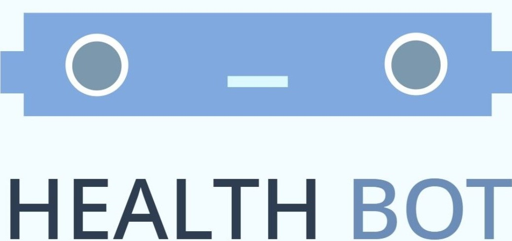

| Home | Symptom Check | Medication Alarm | Emergency System |
About
HealthBot is your virtual medical assistant ready to help you take care of your health 24/7. HealthBot offers a variety of services including a Symptom Check, Medication Alarm, and Emergency System. You can use these tools to keep track of how your well-being and stay safe.
The HealthBot team realizes that it can be frustrating to manage all your health needs on your own. With a busy schedule, you don't always have time to research if your headache is serious. Sometimes, you might forget to take an important pill or vitamin during a hectic week.
Not putting your health as your top priority can be dangerous and lead to severe consequences. HealthBot hopes to help its users make sure their health is taken care of so they can focus on living their lives and spending time with their loved ones.
HealthBot Team
Catherine, Daniel, & Yash